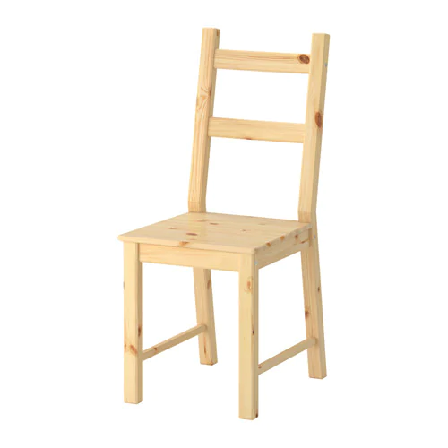

Kawaz
Can we construct every object from a given set of building blocks?

The 'Kawaz' is a novel construction block, accompanied with an AI construction algorithm. I designed and developed it during my double degree in Computer Science and Industrial Design, supervised by Dr. Michael Fink.


Given a 3D representation of an object, my algorithm is able to reconstruct it using a minimal number of Kawaz blocks. It runs faster than alternative standard algorithms such as BFS and Dijkstra by several orders of magnitude.


The code uses the A* search algorithm with an original admissible heuristic I conceived and implemented in Python.
More slides about the Kawaz project can be found here, and a Hebrew presentation was recorded here. The code is available here, and if you like 3D stuff you can find the Kawaz model here.

A future research question is how can we use any set of parts (beyond Kawaz blocks) to construct a desired object?
Such an algorithm could be applied to building shelters in disaster areas using only available materials, as a tool for children in creative invention, and be valuable in many other applications.

-3.jpg)
-2.jpg)